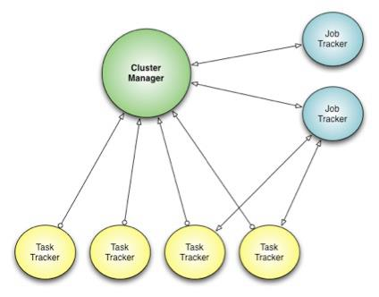

corona
Table of Contents
1 corona
Under the Hood: Scheduling MapReduce jobs more efficiently with Corona | Facebook
原有MapReduce框架存在的限制是：
- The job tracker has two primary responsibilities: 1) managing the cluster resources and 2) scheduling all user jobs. As the cluster size and the number of jobs at Facebook grew, the scalability limitations of this design became clear. The job tracker could not handle its dual responsibilities adequately. At peak load, cluster utilization would drop precipitously due to scheduling overhead.（JobTracker同时管理集群资源以及做任务调度，但是这样的做法限制了scalability.jobtracker成为bottleneck除非能够将两个责任完全分开）
- Another limitation of the Hadoop MapReduce framework was its pull-based scheduling model. Task trackers provide a heartbeat status to the job tracker in order to get tasks to run. Since the heartbeat is periodic, there is always a pre-defined delay when scheduling tasks for any job. For small jobs this delay was problematic.（调度策略现在采用的是pull-based调度模型。tasktracker通过设置心跳定时和jt通信请求任务处理，所以存在一定的延迟，这对于小任务来说存在实时性问题）
- Hadoop MapReduce is also constrained by its static slot-based resource management model. Rather than using a true resource management system, a MapReduce cluster is divided into a fixed number of map and reduce slots based on a static configuration – so slots are wasted anytime the cluster workload does not fit the static configuration. Furthermore, the slot-based model makes it hard for non-MapReduce applications to be scheduled appropriately.（slot-based资源模型这种模型相对于resource-based模型略显模型）
- Finally, the original job tracker design required hard downtime (all running jobs are killed) during a software upgrade, which meant that every software upgrade resulted in significant wasted computation.（软件升级需要重启整个集群）
Facebook’s solution: Corona

- Corona introduces a cluster manager whose only purpose is to track the nodes in the cluster and the amount of free resources. 将资源管理和调度管理想分离，单独分离出Cluster Manager来管理集群资源。
- A dedicated job tracker is created for each job, and can run either in the same process as the client (for small jobs) or as a separate process in the cluster (for large jobs). JobTracker可以单独在client里面存在也可以作为一个进程运行。
- One major difference from our previous Hadoop MapReduce implementation is that Corona uses push-based, rather than pull-based, scheduling. 使用push-based模型
- After the cluster manager receives resource requests from the job tracker, it pushes the resource grants back to the job tracker. jobTracker立刻向cluster manager申请资源，而CM立刻给jobtracker分配资源。
- Also, once the job tracker gets resource grants, it creates tasks and then pushes these tasks to the task trackers for running. There is no periodic heartbeat involved in this scheduling, so the scheduling latency is minimized 一旦jobtracker得到资源之后立刻将任务分派到tt上就可以执行
- The cluster manager also has a new implementation of fair-share scheduling.
- This scheduler is able to provide better fairness guarantees because it has access to the full snapshot of the cluster and jobs when making scheduling decisions.
- It also provides better support for multi-tenant usage by providing the ability to group the scheduler pools into pool groups. 通过pool group机制来为多用户服务。
- A pool group can be assigned to a team that can then in turn manage the pools within its pool group. The pool group concept gives every team fine-grained control over their assigned resource allocation.
- note(dirlt):refers to Borg and Mesos
Corona在fb部署过程是这样的
- Rollout to 500 nodes. Our first step was to deploy Corona on 500 of the machines in the cluster. This let us get feedback from early adopters. 部署500节点集群做反馈。
- Handle all non-critical workloads. Next, we started moving the non-critical workloads for each team to the Corona cluster, along with their compute capacity. This let us monitor the system performance with increasing load. When the cluster had 1,000 nodes, we saw our first Facebook-scale problem - the cluster manager scheduler had a bug that slowed it down. We were able to make the fix without much disruption because of the staged deployment. 然后将non-critical workload迁移到corona上面。到达1000节点的时候cluster manager还出现一个bug并且导致整个集群变慢
- Corona takes over all MapReduce jobs. The final step was to move the mission-critical workloads to Corona as well; eventually the old MapReduce cluster was reduced to 60 nodes. At this point we removed the Hive hook and made the new cluster the default for all workloads. 然后将所有的mapreduce迁移到corona上面
- By mid-2012, we had successfully deployed Corona across all our production systems. The entire process took about three months. 整个过程花费3个月。
为什么fb不使用YARN:
- It’s worth noting that we considered Apache YARN as a possible alternative to Corona. However, after investigating the use of YARN on top of our version of HDFS (a strong requirement due to our many petabytes of archived data) we found numerous incompatibilities that would be time-prohibitive and risky to fix. Also, it is unknown when YARN would be ready to work at Facebook-scale workloads.
- 没有升级到YARN一方面是考虑到兼容性问题，另外一方面是考虑到风险性